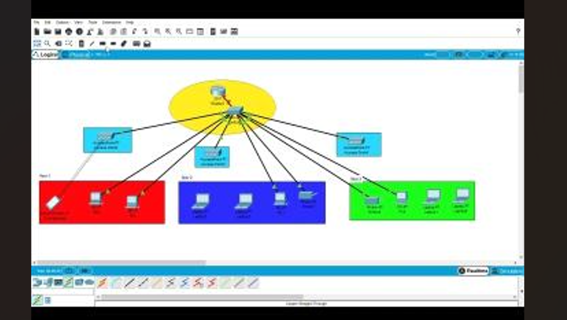

MY PRACTICAL WORK
From theory to real projects.
Welcome to my project portfolio. Here, I showcase
practical exercises and projects that demonstrate
my developing skills in networking, IT support,
and application development.
Built to learn. Made to share.
A collection of practical work across networking and web development.

NETWORKING LABCoffee Shop Network Simulation
A simulated network for a small coffee shop.
This project helps demonstrate network design,
device connections, and connectivity testing.
Technology:
Cisco Packet Tracer
What I explored
Planning a small network, connecting devices, and using a simulated environment to explore connectivity.
Open full topology ↗</>learn. build. repeat.
HTML / CSS / JAVASCRIPT WEB DEVELOPMENTICT Portfolio Website
A responsive personal website that brings my projects, learning journey, credentials, and career documents together.
Technology: HTML, CSS & JavaScript
What I explored
Semantic HTML, responsive layouts, shared styles, accessible navigation, and a contact form with submission feedback.
Explore the website ↗